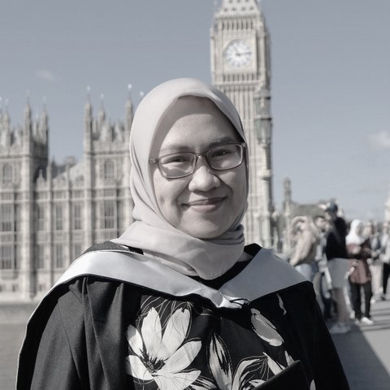

Geospatial researcher quantifying the socio-ecological risk of the global energy transition.
I am a geospatial researcher working on the environmental and social consequences of mining for the energy transition. I hold an MSc in Geospatial Sciences with Distinction from University College London and develop Earth observation pipelines that integrate remote sensing, GIS, and surveying.
Before moving into research, I spent five years as a geospatial consultant, contributing to more than thirty mining and infrastructure projects across Indonesia. I work across the full geospatial measurement chain, from field data acquisition using GNSS, total stations, UAV photogrammetry, and drone LiDAR to data processing, analysis, and visualisation in Python, R, ArcGIS, QGIS, Agisoft Metashape, CloudCompare, Global Mapper, and HYPACK. That experience shapes how I approach research: I first ask what a measurement can reliably support before asking what it might reveal.
My research follows the downstream consequences of the energy transition. As demand for critical minerals grows, mining expands through both new developments and the intensification of existing operations. Much of this expansion occurs in tropical regions, where it places increasing pressure on forests and surrounding communities. While much attention is devoted to the extraction phase, my interest lies in what comes after. Once mining ends, the landscape carries an obligation to recover. I seek to understand whether ecological recovery truly occurs, how it can be measured using Earth observation and geospatial data, and whether post-mining restoration can be independently verified rather than simply assumed.
Mapping where extraction for critical minerals is expanding and what it displaces, from global mining footprints and brownfield expansion to regional assessment across ASEAN. The work spans automated spatial-analysis pipelines in Python and Google Earth Engine that evaluate mine sites against environmental and social indicators, using both proximity and hydrological flowpath exposure, and a holistic framework for examining complex problems in energy-transition solutions.
Deep learning applied to satellite imagery for mapping mining footprints, and geospatial foundation-model embeddings for detecting land change that existing reference datasets miss. I provide domain direction to the data-science team building these pipelines.